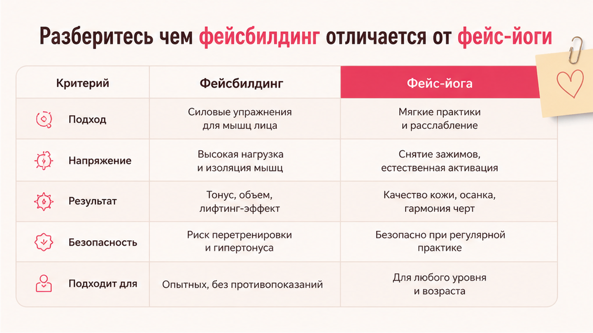
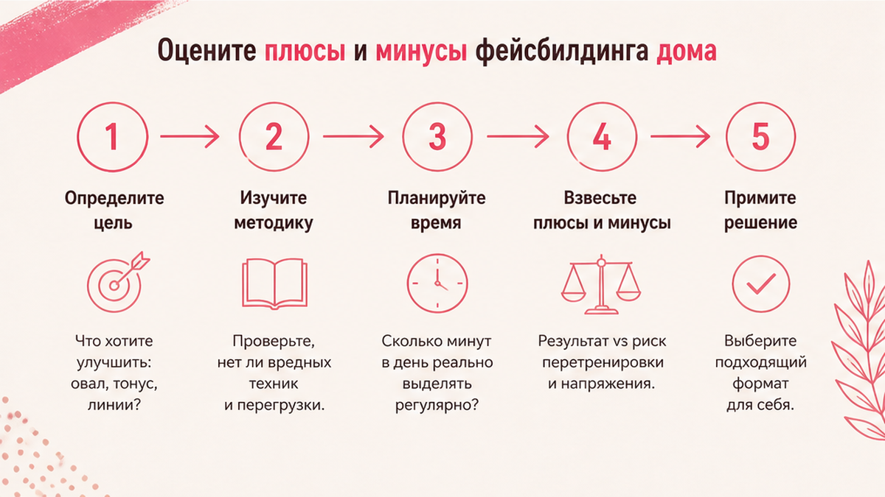
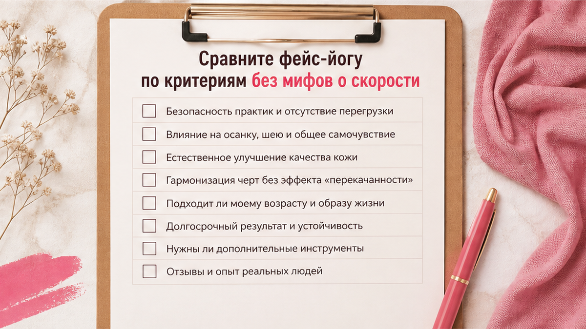

Выбираете между фейсбилдингом и фейс-йогой и хотите понять, что даст заметный результат быстрее - без уколов и без покупки "кота в мешке"? Честный ответ: ни одна школа не перерисует лицо за три дня. Зато за 10-14 дней можно увидеть, от чего у вас отклик - от отёка, от зажимов или от сухости. Ниже - сравнение по делу, чеклист выбора и готовый тест на две недели, чтобы не метаться между курсами.
Фейсбилдинг - это структурированная школа с упором на миофасциальный массаж и лимфодренаж по видеопротоколу. Фейс-йога - более широкий домашний формат: упражнения, мягкий массаж, привычки мимики и уход. Быстрее визуально часто реагирует отёк (лимфоприёмы). Морщины от привычек - через 3-6 недель регулярности. Выбор не "или-или": можно взять лимфоблок из одной системы и привычки из другой, если не перетягиваете лицо.
Ко мне часто приходят с одной и той же фразой: "Я купила курс, сделала три дня и бросила - то ли метод плохой, то ли я не дисциплинированная". В девяти случаях из десяти проблема не в методе, а в несовпадении задачи и формата. Кому-то нужна жёсткая "расписанная коробка" с видео на каждый день. Кому-то - короткий ритуал без подписки и без чувства экзамена. Разберём оба пути без войны школ и без обещаний "минус десять лет".

Фейсбилдинг - направление гимнастики для лица с упором на укрепление и тонус мышц: овал, скуловая зона, область вокруг глаз. Обычно это видеокурсы с расписанием и чёткими упражнениями на подтяжку. Это не синоним "любой гимнастики для лица": в фейсбилдинге чаще качают и прорабатывают мышцы, в фейс-йоге в моём подходе - снимаем зажимы и учим мимике не перенапрягать лоб.
Фейс-йога - зонтичное название. Под ним живут разные авторы: кто-то делает упор на "качку" скул, кто-то - на расслабление и осанку. На naturallift.store я веду практику как мягкую систему: не накаачивать лицо как бицепс, а снимать зажимы, учить мимике не "дубасить" лоб и межбровье, связать движения с уходом за кожей. То есть фейс-йога у нас - не один патентованный протокол, а набор привычек и упражнений под вашу зону.
Миофасциальный массаж - если по-простому: не трём кожу как сковороду, а мягко "разливаем" напряжение в тканях под ней. Лимфа - это внутренняя "канализация": когда она застаивается, лицо к вечеру выглядит уставшим и одутловатым, хотя вы спали нормально.
Главное отличие для выбора: фейсбилдинг даёт готовую траекторию "делай ролик 1, 2, 3". Фейс-йога в домашнем формате гибче - вы собираете протокол под свою боль (лоб, шея, овал), но сами отвечаете за регулярность.
Если параллельно беспокоит шея и горизонтальные линии, загляните в материал про кольца Венеры и работу с платизмой - там другой фокус, но принцип тот же: без перетяжки и с ежедневным SPF.

Фейсбилдинг дома = вы смотрите уроки и повторяете за экраном. Плюсы и минусы честно, без рекламы и без травли.
Плюсы:
Минусы:
Сделайте: пробовать бесплатный мастер-класс школы и честно отметить, прошли ли вы его до конца без спешки. Не делайте: покупать годовой пакет на эмоциях после одного ролика.

Фейс-йога в моей практике - это короткие сессии 10-15 минут, упор на расслабление жевательных и лба, мягкую работу с овалом, связку с кремом. Сравним с фейсбилдингом по тем критериям, которые реально влияют на "быстроту" эффекта.
| Критерий | Фейсбилдинг (дома по видео) | Фейс-йога (домашний формат) |
|---|---|---|
| Главный фокус | Миофасциальный массаж, лимфа, триггерные зоны | Привычки мимики, расслабление, овал, шея, уход |
| Время в день | Часто 30-60 мин по уроку | Обычно 10-20 мин, можно дробить |
| Что может откликнуться быстрее | Отёк, "уставшее" лицо к вечеру, застой | Зажимы лба/челюсти, "собранное" лицо от стресса |
| Морщины от привычек | Нужны доп. привычки, не только массаж | Прямо бьём в причину: лоб, межбровье, рот |
| Нужен крем/масло | Да, для скольжения | Да, особенно на сухой коже |
| Риск перетяжки | Если ускоряете и давите сильнее "для эффекта" | Если делаете "качалку" скул и гримасы |
| Гибкость | Ниже - идёте по программе | Выше - собираете под свою зону |
Миф о скорости: ни одна система не уберёт глубокий залом за неделю. Реалистично: отёк может уйти быстрее; мелкие линии от сухости - за 2-3 недели при уходе; привычные морщины - за 4-6 недель, если вы ещё и перестали хмуриться в телефон.
Я обычно советую начать с пятиминутного расслабления лица - это быстрый тест, "ваш" ли формат вообще заходит, прежде чем покупать курс.
Отметьте пункты, которые про вас. Это практичнее, чем спорить, какая школа "лучше".
Чеклист выбора:
Если отметилось больше двух пунктов в обеих колонках - вам не нужна "война лагерей". Нужен гибрид: лимфа утром, привычки днём, крем вечером.
Подберите текстуру ухода через короткую диагностику кожи - на сухой коже массаж без крема даёт микротравмы и создаёт иллюзию, что "метод не работает".
Две недели - минимум, чтобы сравнить пути на себе, а не по отзывам. Не смешивайте в один день всё подряд: так вы не поймёте, что сработало.
Вариант A - упор на лимфу (стиль фейсбилдинга):
Вариант B - упор на привычки (фейс-йога-стиль):
Миниплан: выберите A или B → 14 дней без пропусков дольше трёх подряд → одно фото "до/после" → если отклик есть, добавьте второй блок на следующие 14 дней.
Перед стартом проверьте давление пальцев на лице: если кожа краснеет дольше 30 минут - уменьшите силу. Используйте крем для скольжения на сухой коже, иначе массаж даст микротрещины вместо свежести.
Честно: если за 14 дней нет ни ощущения легче в лице, ни малейшего визуального сдвига по отёку - проблема может быть не в школе, а в щитовидке, аллергии, СПКЯ, приёме препаратов. Тогда к врачу, а не новый курс.
Я вижу одни и те же промахи, когда женщина перескакивает с фейсбилдинга на фейс-йогу и обратно каждую неделю.
| Ошибка | Что происходит | Как исправить |
|---|---|---|
| Давить сильнее "чтобы быстрее" | Синяки, отёк сильнее, страх трогать лицо | Давление 2-3 из 10 первые 3 недели |
| Делать всё в один вечер | Перегруз, бросаете на 4-й день | Один блок 10-20 мин, не два курса сразу |
| Без крема на сухой коже | Шелушение, линии глубже | Скольжение + барьерный уход |
| Ждать эффект ботокса | Разочарование и новые траты | Цель - мягче и свежее, не "новое лицо" |
| Игнорировать шею и осанку | Овал "плывёт" несмотря на массаж | 2 минуты на шею и плечи в каждой сессии |
| Менять метод каждые 5 дней | Нет накопления эффекта | Минимум 14 дней одного протокола |
Сделайте: вести мини-дневник на 14 дней - сон, стресс, цикл; воду не нужно пить литрами, важнее крем и SPF. Не делайте: сравнивать себя с обложками курсов - там свет, угол и иногда ретушь.
Если нужен один ответ "что выбрать для быстрого результата":
Я за гибрид без фанатизма: утренняя лимфа 2 минуты, вечерняя фейс-йога 10 минут, днём - следить за лбом в телефоне. Это не "предательство" школы, это взрослый подход к своему лицу.
Ещё один практический критерий: если после сессии вы чувствуете лёгкость в челюсти и меньше "тяжести" в конце дня - вы на верном пути, даже когда в зеркале пока почти ничего не изменилось. Визуал догоняет ощущения обычно на второй-третьей неделе. Если после каждого урока остаётся боль или головокружение - метод или техника вам не подходят, а не "надо терпеть".
Не делайте практики при острых болях в лице/челюсти, онемении, отёке после травмы, температуре. Сначала врач, потом косметика и массаж.
Достоверность: сравнение основано на общедоступных описаниях фейсбилдинга и на практике Елены Шимановской в фейс-йоге. Это не медицинская рекомендация и не реклама сторонних курсов. Решение о процедурах и покупке программ - на вас; при хронических заболеваниях согласуйте нагрузку с врачом.
Чаще быстрее откликаются лимфодренажные приёмы - их много в фейсбилдинге. Но мягкая лимфа есть и в фейс-йоге. Важнее регулярность и давление 2-3 из 10, а не название школы.
Да, если не перегружаете лицо в один день. Рабочая схема: лимфа утром, упражнения на привычки вечером. Не дублируйте один и тот же интенсивный массаж дважды.
Минимум 10-15 минут плюс дневные микропривычки (лоб, телефон, челюсть). Раз в неделю по часу эффекта не даст.
На сухой и тонкой коже - да. Без скольжения пальцы цепляют кожу и дают микротравмы. Подберите текстуру через диагностику кожи на сайте.
Нет. Домашние практики дополняют уход, но не заменяют очный осмотр, диагностику узлов, инфекций, аллергий.
Агрессивный массаж и перегрев - да, риск. При сосудистой сеточке - только мягкие поглаживания, без "выдавливания" и горячих ванн для лица. Уточните у дерматолога.
Отёк - иногда 1-2 недели. Мелкие линии от сухости - 2-4 недели с уходом. Привычные морщины - 4-6 недель при работе с мимикой.
Не возраст решает, а сухость кожи и тонус. Сухой коже - барьерный уход и мягкая лимфа. Хороший тонус - можно добавить упражнения на овал и шею без боли.